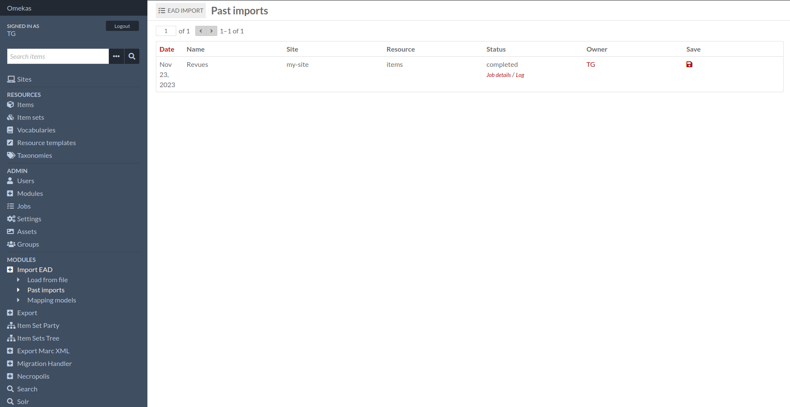
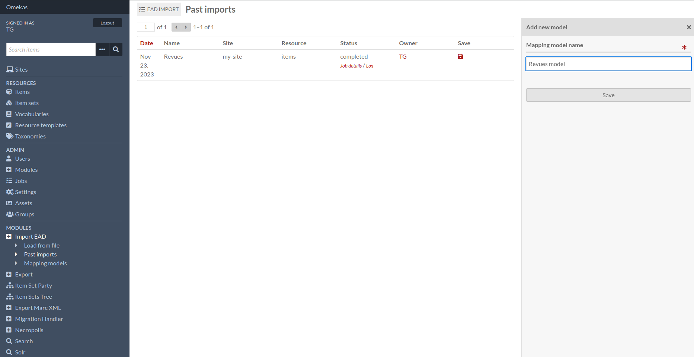
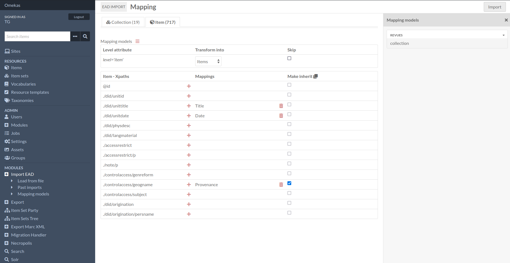
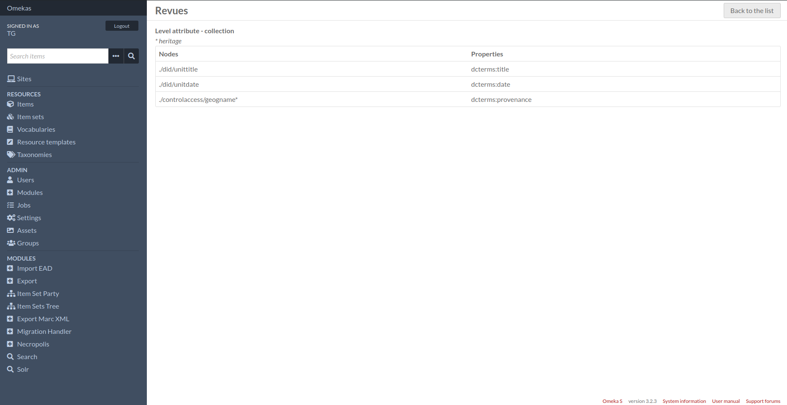

Features
Past imports
On this page you’ll see past imports, and you’ll be able to save the mapping model here.
The template can then be used again when configuring a new import, regardless of the type of resource produced.
Mapping models
From this page you can view saved models again, delete them or change their label.
